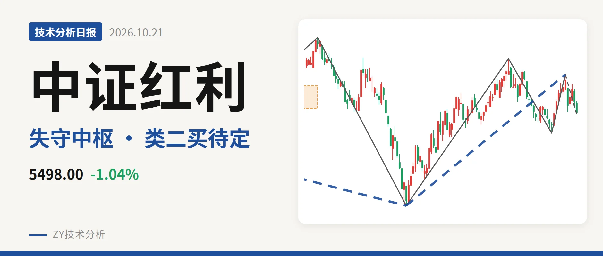
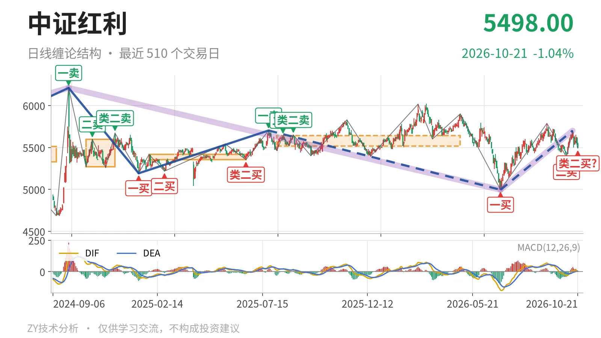
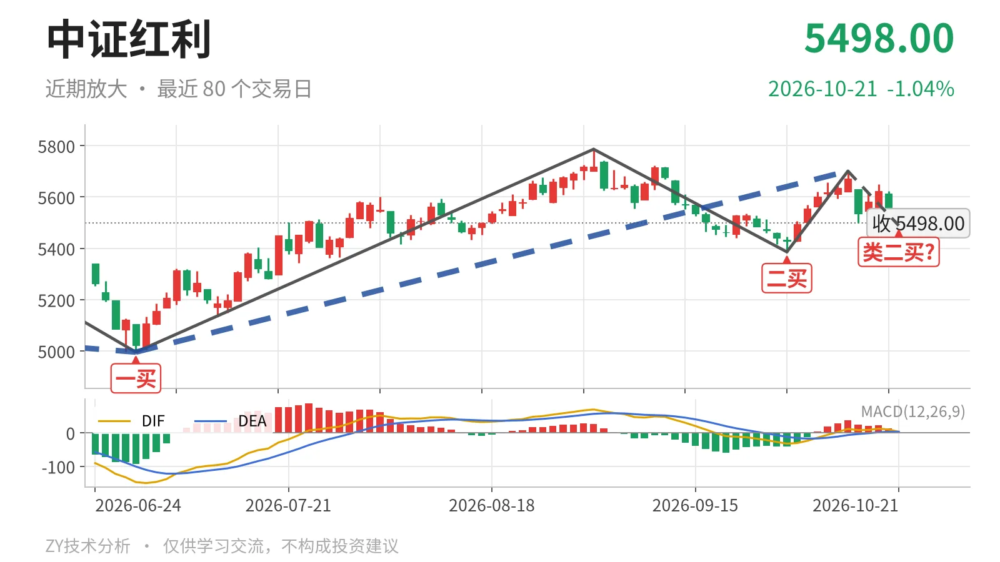

中证红利｜失守5518点中枢下沿 类二买待定

最近日线中枢 5518.46—5639.99点，收盘位于中枢之下
一句话：失守日线中枢下沿，10月14日回落笔未结束，结构中性偏弱
🧭 走势结构：更大级别仍是调整中枢震荡
当前更大级别仍处在2024年10月8日以来的调整段内，6月30日开启的日线反弹段还在延续。2024年10月8日至2026年6月30日下跌段从6209.67点落到4995.49点，跌约19.6%；6月30日至10月14日上涨线段由4995.49点升到5701.06点，涨约14.1%。两段都未结束，所以当前既不是单边上涨，也没有破坏反弹段，而是调整段内的回踩。10月14日以来的下跌笔仍在延续，尚未改变反弹段结构。

📍 中枢位置：最新价跌破日线中枢下沿
最新收盘5498.00点落在最近日线中枢下沿之下。最近中枢为2025年8月4日至2026年4月30日中枢，区间5518.46—5639.99点，中轴5579.23点，目前尚未完成。最新价低于下沿约20点，幅度0.4%。中轴从上一中枢5385.16点抬升至5579.23点，说明中枢原本在上移。当前跌破下沿，暂时中断了上移节奏，但仍属下沿附近的争夺，未出现大幅脱离。
🔍 买卖点：一买二买未坏，类二买暂定
6月30日一买4995.49点和9月29日二买5386.04点尚未被新低破坏。9月29日二买后反抽至5701点一线，一度回到中枢内部，但10月14日之后未能维持。10月14日高点5701.06点未超过9月1日高点5786.14点，所以这些买点仍对应日线笔级别，不因创新高而降级。10月21日5488.44点出现在类二买位置，但所在10月14日至10月21日下跌笔还未结束，只能视为暂定的类二买；若该笔继续下行，该位置会随笔的延续而变化，不能提前固定。

⚖️ 背驰：回落力度收缩，无新低不新弱
当前回落笔与9月1日至9月29日下跌笔相比，力度明显收缩。9月1日至9月29日下跌笔绿柱面积561、DIF低点-32.7；10月14日以来的下跌笔截至最新绿柱面积0、DIF低点2.6。10月21日低点5488点高于9月29日低点5386点，因此不是“新低不新弱”，而是下跌动能尚未放出。DIF仍在零轴上方，说明6月30日以来的上行结构暂未被破坏。当前下跌笔还在延续，若后续绿柱面积不快速放大，回落级别不会扩大。
🧱 关键观察：回不到5518点则三卖结构
强弱先看5518点一线。若后续反抽回不到5518点上方，结构上构成三卖，10月14日以来的回落会从回踩升级为对反弹段的破坏。若重新站上5518点，下跌更可能只是中枢扩展，反弹段继续。若站上5701点，则反弹段重新转强；下方5386点一线是9月29日二买所在，跌破则二买破坏，再下看4995点附近。当前偏离下沿不大，结构中性偏弱。
⚠️ 本文为基于公开行情数据的缠论技术结构记录，由程序自动计算并生成，仅供学习交流，不构成任何投资建议。市场有风险，投资需谨慎。